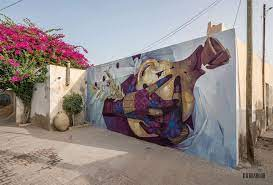
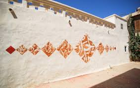
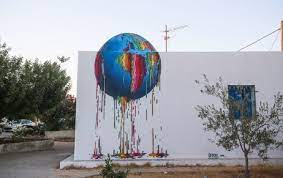
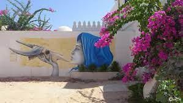
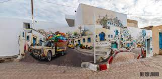
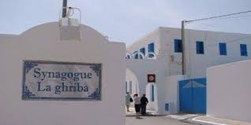
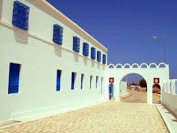
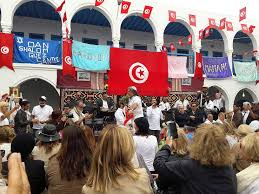
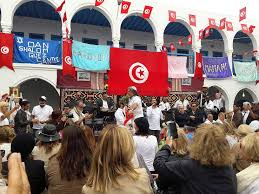

Djerbahood est un quartier du village d'Erriadh au centre de Djerba. Le quartier a ete visite par environ 150 artistes qui ont realise de gigantesques fresques et des dessins sur les murs. J'y suis moi meme alle pendant les vacances de Paques et j'ai donc pu observer les dessins, memes minimes, qui apparaissent a chaque coin de rue.
    
La Ghriba :
C'est une synagogue tunisienne qui constitue un des des principaux marqueurs identitaires des Juifs de Djerba. Elle est l'une des dernieres communautes juives vivantes du monde arabe. Elle fait l'objet d'un pelerinage annuel, à l'occasion de la fete juive de Lag Ba'omer, rassemblant plusieurs milliers de pelerins. C'est aussi l'une des principales attractions touristiques de l'île de Djerba. Elle est situee à proximite du village d'Erriadh et est accessible a pied ou en taxi.
  
